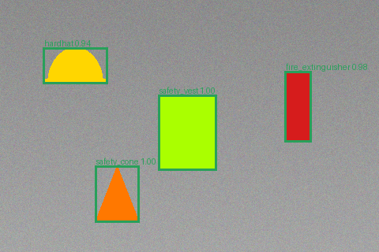
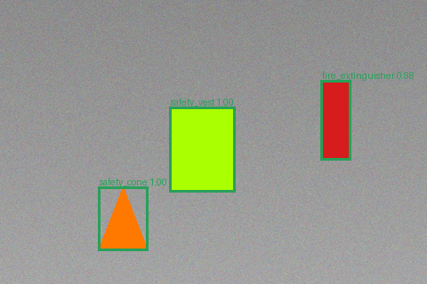
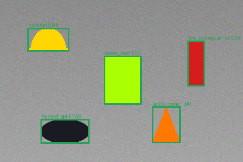
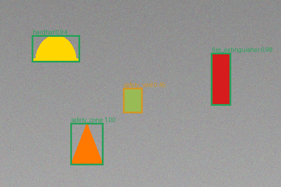

Computer vision · checklist · HITL
field-inspection-report
Synthetic site photos become annotated evidence and PASS / REVIEW / FAIL checklist verdicts, with uncertain detections routed to a person.
Public · synthetic demoThe problem
Bounding boxes are not a signed-off inspection.
An inspection team needs required items checked, hazards stated in plain language, and borderline calls isolated for review—not a detector's raw box dump.
Input
Six fictional safety scenes
Required: hardhat · safety vest · fire extinguisher · safety cone Forbidden: spill / hazard Confidence gate: 0.55 Offline detector: HSV threshold + connected components
The money shot
Visual evidence with fail-safe routing
Verdicts2 PASS · 1 REVIEW · 3 FAIL
Missing / hazard2 violations · 1 defect
Synthetic detector F11.0




| Scene | Signal | Route |
|---|---|---|
| 01 compliant | All four required items | PASS |
| 02 missing hardhat | Required item absent | FAIL |
| 03 spill hazard | hazard_spill 1.00 | FAIL |
| 05 faded vest | safety_vest 0.45 < 0.55 | HUMAN REVIEW |
How it's verified
The detector is replaceable; the checklist is stable.
Detected objects are matched against required and forbidden classes, low-confidence calls enter review_queue.csv, and every scene receives one verdict. The same interface can swap the synthetic color detector for YOLO or a hosted vision model without changing the gate.
Honest limitations
- Scenes are fictional colored shapes, not real construction photos.
- Precision, recall, and F1 equal 1.0 only on these clean synthetic scenes; real lighting, occlusion, and look-alikes are harder.
- The confidence threshold is a business dial and must be calibrated on representative data.
- A production inspector remains responsible for consequential safety decisions.